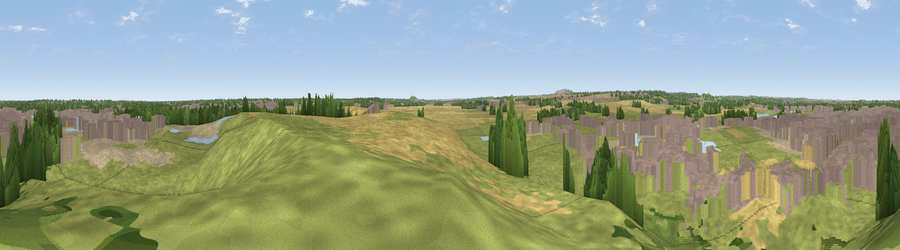

Viewpoint near New Rossington
#31947 in England · top 63% of its area beats it · near New RossingtonThe view, rendered

A 360° render of this exact spot computed from the terrain model, tree cover and land cover — summer colours, afternoon light, calibrated against photographs of famous viewpoints. Real trees, hedges and buildings will differ in detail.
The panorama
Grey silhouette: terrain skyline in each direction (720 bearings, Earth curvature and refraction included). Dashed green: skyline with trees (+15 m) and buildings (+8 m) as obstacles. Blue strip: how far the ground is visible on each bearing.
Where the view opens
Wedge length = distance to the farthest visible ground on that bearing (vegetation-aware). Rings at 10, 25 and 50 km.
What fills the view
47% grassland · 23% built-up · 17% cropland · 6% woodland · 5% bare ground · 2% water
Angular shares of the visible panorama (visual magnitude), not map area. Landscape diversity 0.61 (0–1 Shannon).
Key numbers
More beautiful places nearby
The staircase of upgrades: each row has a higher view potential than everything closer. Driving times are estimates from straight-line distance, calibrated against real road routing — check an actual route before setting out.
| Place | Direction | Drive | Score |
|---|---|---|---|
| Viewpoint near Loversall | WNW · 5 km | ~10 min | 47.1 |
| Viewpoint near Armthorpe | NNE · 6 km | ~14 min | 47.5 |
| Viewpoint near Maltby | SW · 8 km | ~16 min | 70.8 |
| Viewpoint near Oughtibridge | W · 28 km | ~44 min | 72.5 |
| Viewpoint near Wharncliffe Side | W · 28 km | ~45 min | 75.2 |
| Viewpoint near Greenfield | W · 60 km | ~82 min | 76.0 |
| Viewpoint near Carrbrook | W · 61 km | ~83 min | 77.1 |
| Viewpoint near Otley | NW · 61 km | ~83 min | 77.5 |
53.47422, -1.10013 · source: screening · position refined by local search. Computed location — check access rights before visiting.